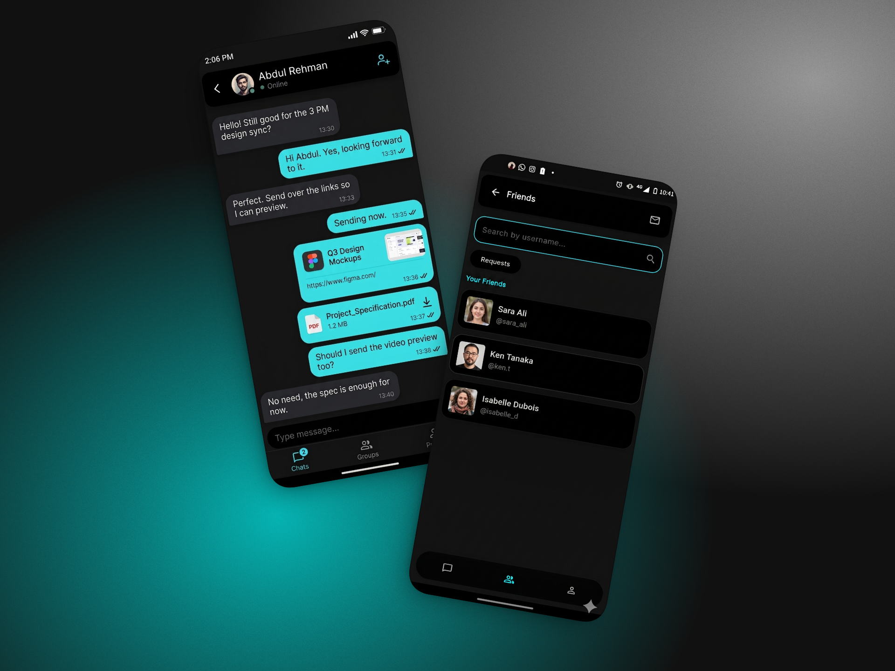

← Back to Featured Projects
We Two
A real-time duo messaging platform focused on soft UI aesthetics, custom theming, and instant local-state synchronization.
Flutter
Supabase
Real-Time
UI/UX
Overview
- Built for private two-person conversations with low friction UX.
- Real-time event handling backed by Supabase channels.
- Theme engine designed for soft visual consistency.
- Near-instant local state reflection for message actions.
Preview

Key Features
- Realtime message delivery and status updates.
- Theme-aware UI components with configurable palettes.
- Floating dock navigation for quick chat actions.
- Session-friendly local caching and sync behavior.
Planned Enhancements
- Voice notes and media reply workflows.
- Encrypted backup and restore support.
- Advanced read analytics and smart reply assist.